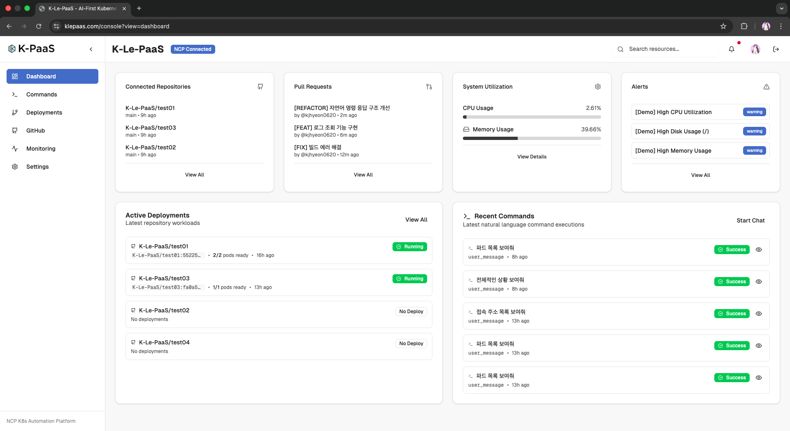

Project 01 · Cloud Operations Gateway
K-Le-PaaS
자연어 명령으로 클라우드 운영 흐름을 통합한 FastAPI 기반 운영 자동화 백엔드
핵심 한 줄
GitHub, Kubernetes, Slack, NCP, 모니터링을 하나의 백엔드로 묶어 배포, 롤백, 헬스체크, 자연어 명령 실행을 일관된 API 흐름으로 정리했습니다.
Problem To Product
흩어진 운영 도구를 하나의 관문으로 묶었습니다.
문제
배포와 롤백을 하려면 GitHub Actions, NCP 콘솔, kubectl, Slack 알림을 각각 확인해야 했습니다. 절차가 사람의 기억과 수동 조작에 의존했고, 신규 팀원이 운영에 들어오기 어려웠습니다.
해결
FastAPI를 중심으로 REST API, WebSocket, GitHub Webhook, Kubernetes/NCP 작업, Slack 알림, 명령 이력, 헬스체크를 하나의 백엔드 흐름으로 통합했습니다.

Implementation Notes
자연어 입력을 실제 운영 액션으로 바꾸는 흐름을 설계했습니다.
NLP 명령 처리
한국어 명령을 Gemini 기반 intent/entity로 해석하고, 위험 작업은 확인 흐름을 거쳐 실행하도록 구성했습니다.
운영 이력
명령, 대화, 배포, 헬스 상태, 알림을 저장해 언제 무엇이 실행됐는지 추적 가능하게 했습니다.
외부 연동
Kubernetes, NCP SourcePipeline, GitHub App/Webhook, Slack, Prometheus를 서비스 계층으로 분리했습니다.
제품 의미
운영자가 명령어를 외우는 방식에서 벗어나, 문맥과 결과를 함께 보는 운영 관문을 만들었습니다.